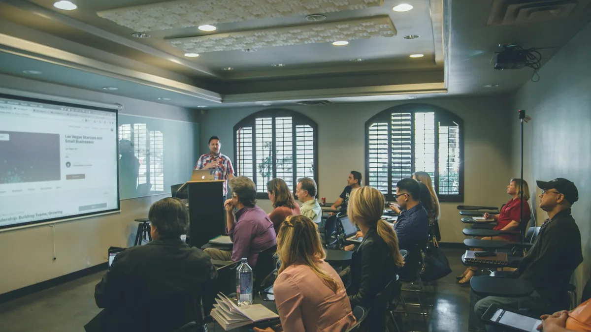

Tentang Program Magang
Mengenal visi, metode pembelajaran berbasis praktik, dan ruang lingkup pengembangan website terintegrasi digital marketing untuk peserta didik vokasi dan perguruan tinggi.

Mempersiapkan Keterampilan Praktis yang Relevan dengan Kebutuhan Industri Digital
Program magang ini lahir dari kebutuhan nyata dunia kerja di mana kepemilikan website yang fungsional harus berjalan beriringan dengan kemampuan menjangkau audiens melalui strategi digital marketing yang terukur.
Kami menyelenggarakan program magang yang mengedepankan pembelajaran berbasis praktik (project-based learning). Peserta tidak hanya diajarkan teori, melainkan dilibatkan langsung dalam alur kerja perancangan, penataan kode, pembuatan aset visual, penulisan konten informatif, dan optimasi mesin pencari sesuai dengan bidang keahlian masing-masing.
Prinsip Integritas Konten: Informasi yang disajikan dalam website ini bersifat transparan dan faktual. Seluruh kegiatan magang difokuskan pada penguatan kompetensi teknis dan soft skill peserta tanpa menjanjikan hal-hal komersial yang belum ditetapkan resmi.
Pendekatan Pembelajaran yang Kami Terapkan
Tiga pilar metode yang memastikan setiap peserta memperoleh pengalaman belajar yang terarah dan bermakna.
Berbasis Proyek Nyata
Peserta mengerjakan modul proyek yang merefleksikan alur kerja pembuatan website sebenarnya, mulai dari riset kebutuhan hingga simulasi peluncuran.
Pendampingan Berkala
Pembimbing memberikan arahan teknis, evaluasi berkala atas hasil pengerjaan modul, serta sesi tanya jawab untuk menyelesaikan kendala teknis.
Kolaborasi Antar Jurusan
Peserta belajar memahami bagaimana peran programmer, desainer UI, pembuat konten, dan teknisi jaringan saling melengkapi dalam satu proyek web.
Integrasi Keahlian dalam Proyek Website
Setiap jurusan memiliki kontribusi spesifik yang membentuk satu kesatuan ekosistem digital yang utuh.
| Jurusan | Fokus Pembelajaran Utama | Kontribusi dalam Proyek Web |
|---|---|---|
| Informatika | Logika komputasi, algoritma, alur kerja data digital, dan pemecahan masalah sistematis. | Menganalisis alur logika kebutuhan fitur dan konsistensi struktur informasi halaman web. |
| Bisnis Digital | Riset audiens, strategi kalender konten, copywriting persuasif, dan dasar SEO on-page. | Menyusun konten informatif berbasis kata kunci pencarian audiens sasaran. |
| DKV / Multimedia | Prinsip desain visual, tata letak antarmuka, hierarki tipografi, dan optimasi format WebP. | Menghasilkan aset visual, ilustrasi, dan desain UI yang nyaman dilihat di semua layar. |
| RPL | Konstruksi kode HTML5 semantik, CSS3 responsif, JavaScript modern, dan framework Bootstrap 5. | Merekayasa tampilan visual menjadi kode antarmuka web interaktif yang siap tayang. |
| TKJ | Setup local web server, konfigurasi domain, DNS record, hosting, dan sertifikat HTTPS. | Memastikan website dapat diuji pada lingkungan lokal dan siap dipublikasikan secara aman. |